A class timetable that stays on your PC.
Class Schedule is a free, open-source Windows app for students. Paste in your semester, see it as a clean week, and get a notification before each class. It runs offline, has no account, and keeps everything in one file you own.
- Version
- 1.0.0
- Size
- 69 MB, one .exe, no installer
- Runs on
- Windows 10 (1809+) or 11, 64-bit
- Licence
- GNU AGPL v3
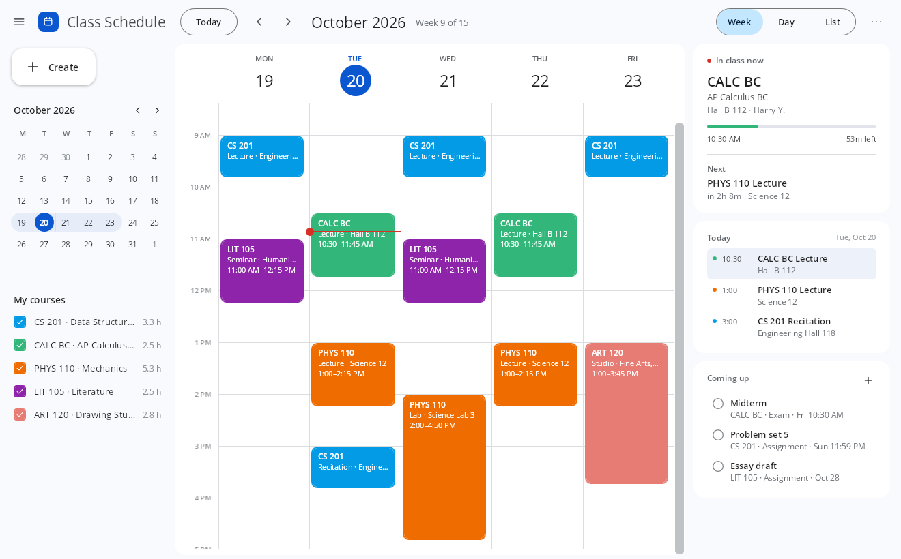
- 1Week of termCounted from your term dates.
- 2The time nowA red line that moves down the day.
- 3In class nowTime left, and what's next.
- 4Your coursesHours a week. Untick one to hide it.
- 5Coming upAssignments and exams due in the next two weeks.
Every image on this page is a screenshot of the app itself, running with sample classes.
Native
A real Windows program, written in C# with WPF on .NET 8 and drawn by DirectX, not a website in a wrapper. The week grid is laid out by the app itself, and when you minimise the window it gives its memory back to Windows.
Offline
There is no networking code in the app. No update checks, no analytics, no crash reports, no web fonts. Reminders are Windows notifications raised on your machine, so it all works with Wi-Fi off. The source is there to check.
No account
Nothing to sign up for, sign in to, or pay for. Your schedule is one JSON file on your disk, at %APPDATA%\ClassSchedule. Copy it, back it up, or open it in Notepad.
Week, day or list. Light or dark.
Every course gets a solid colour, classes that overlap sit side by side, and the panel on the right keeps today in view.
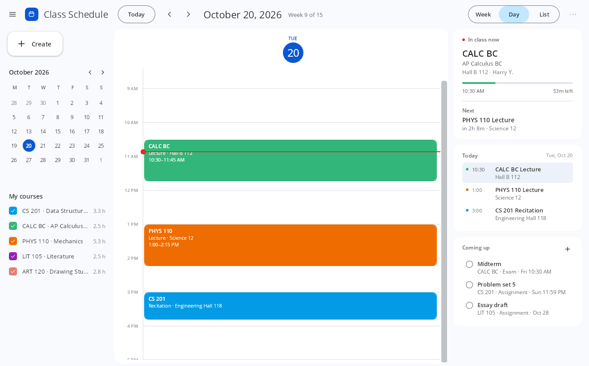
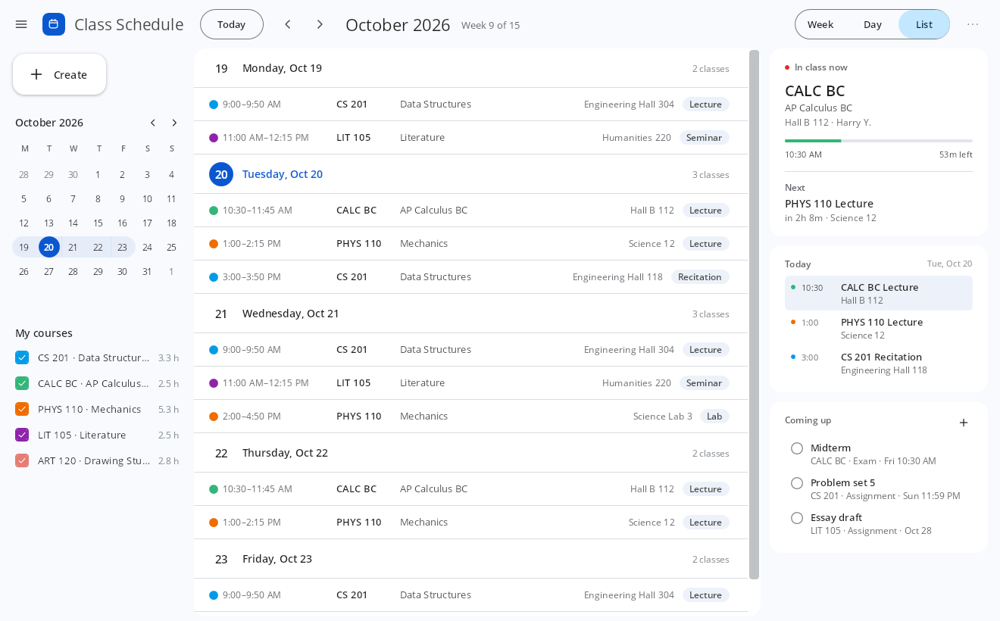
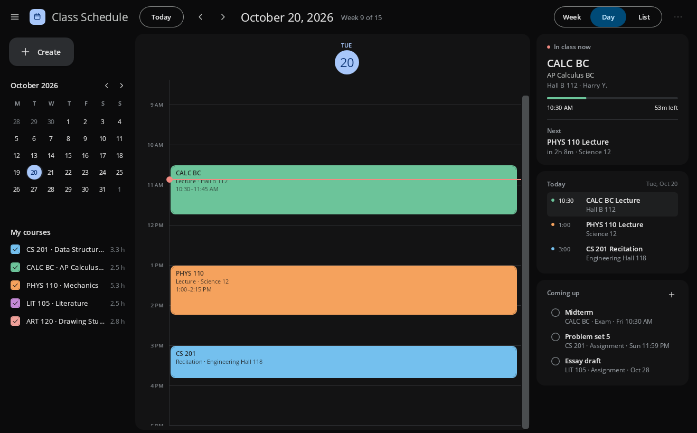
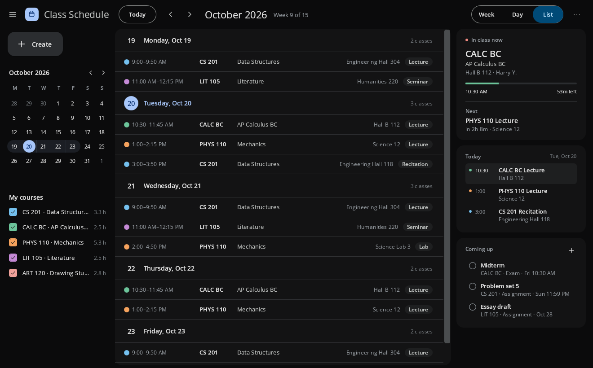
Paste the whole semester at once.
Type classes the way you'd say them, or paste rows from your registrar's page or a spreadsheet. The preview shows what was understood before anything is added.
- Sensible guesses. “1-2:15” is the afternoon, “9-9:50” is the morning.
- Clear problems. A line with no days or time is flagged, and the rest still go in.
- No duplicates. Classes already in your schedule are skipped.
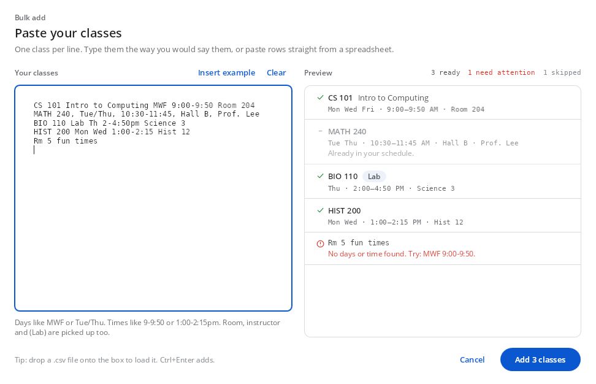
A settings window that shows its work.
Every preference lives in one searchable window, with a preview that redraws your own week as you change things.
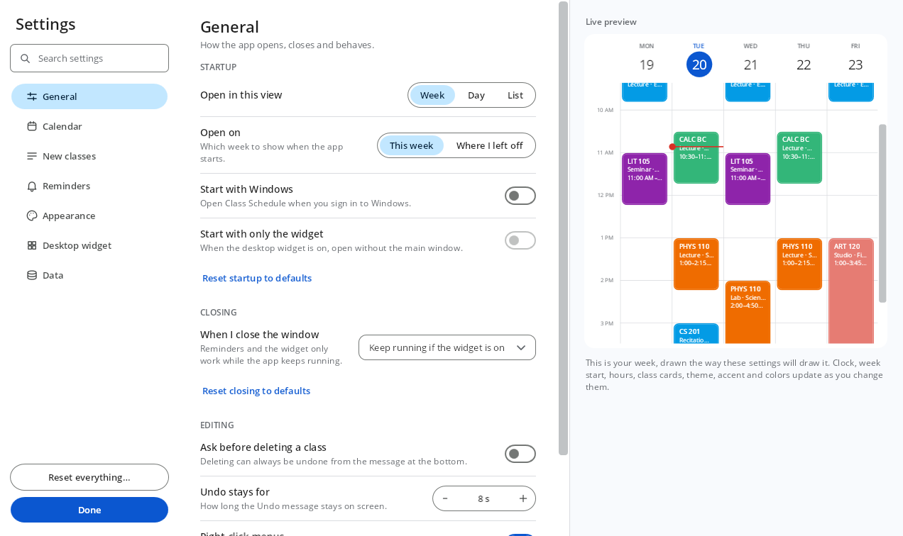
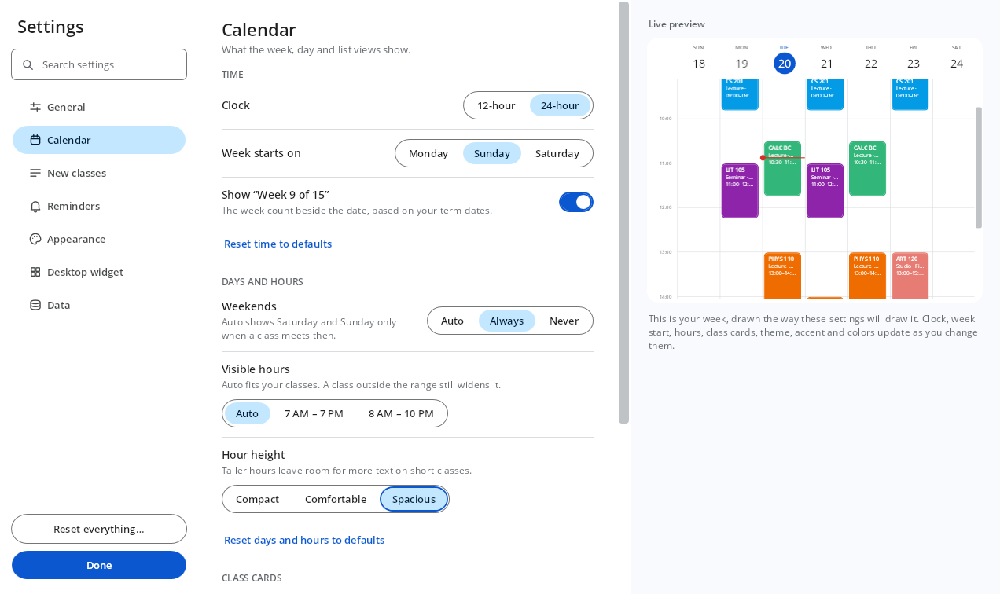
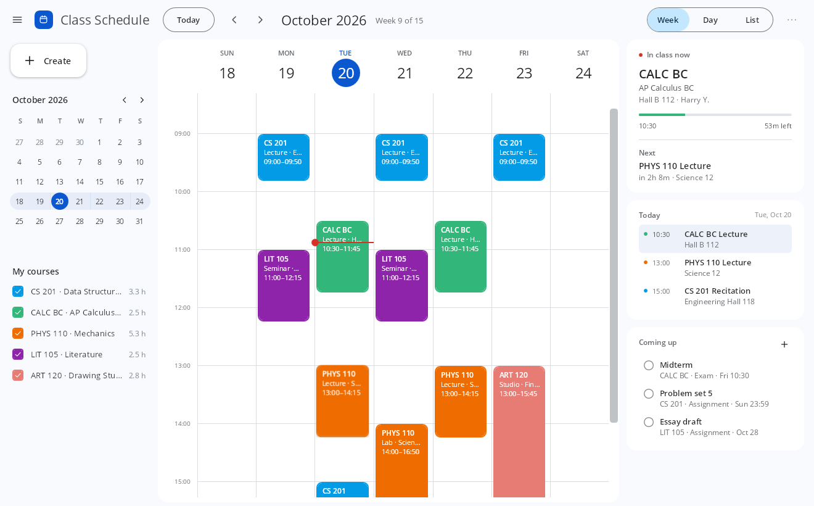
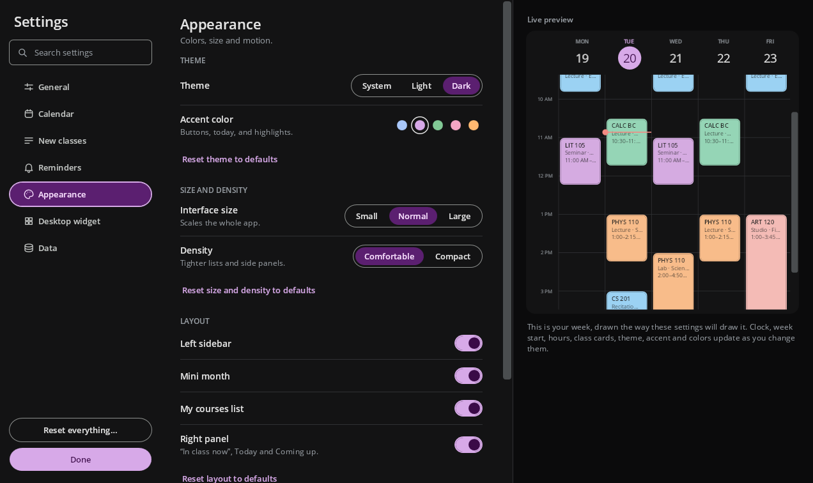
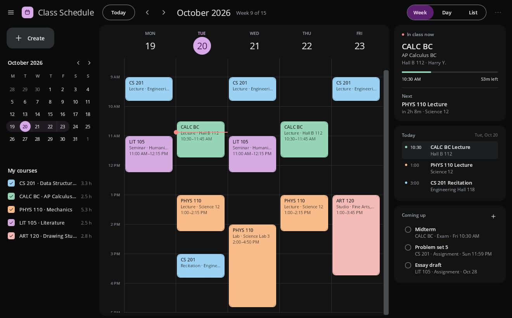
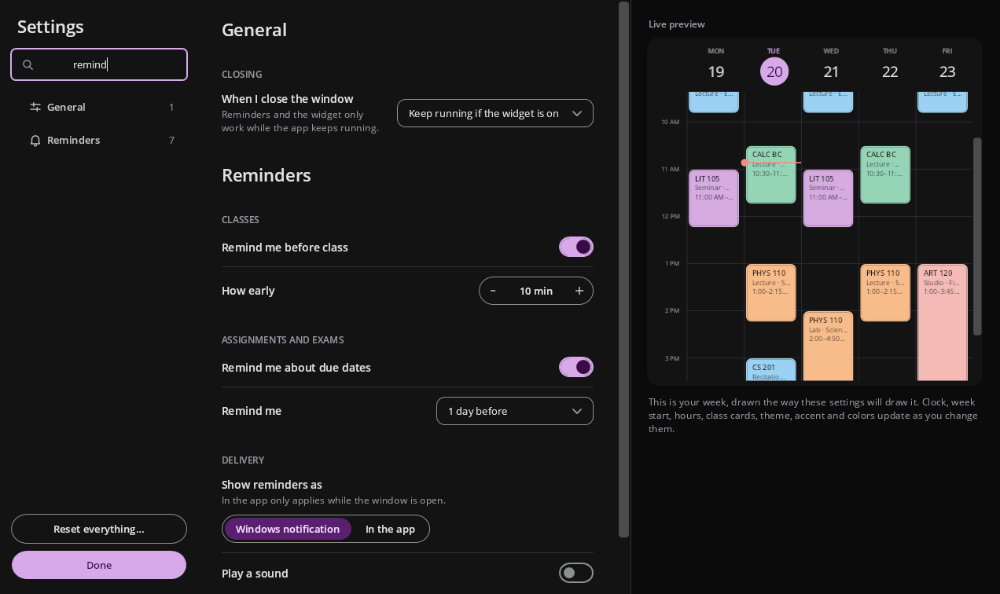
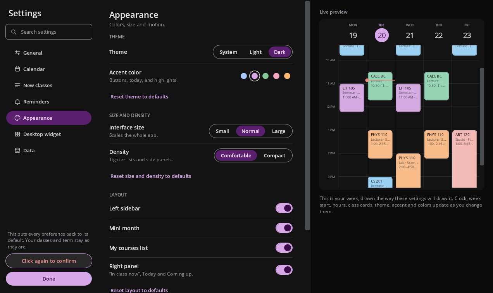
The small things.
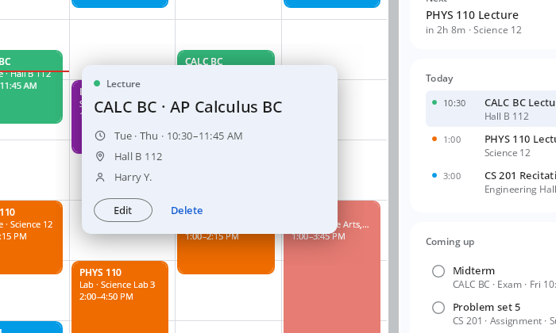
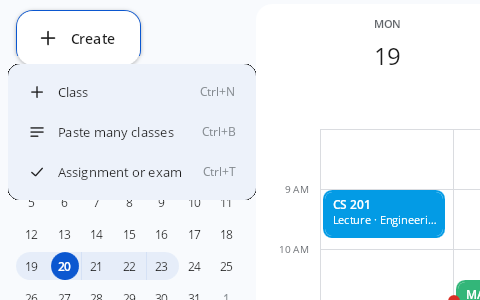
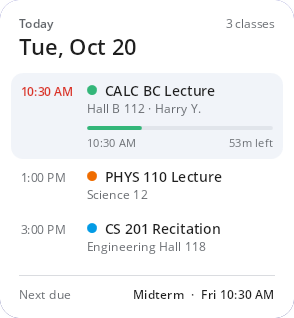
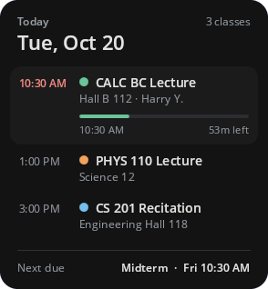
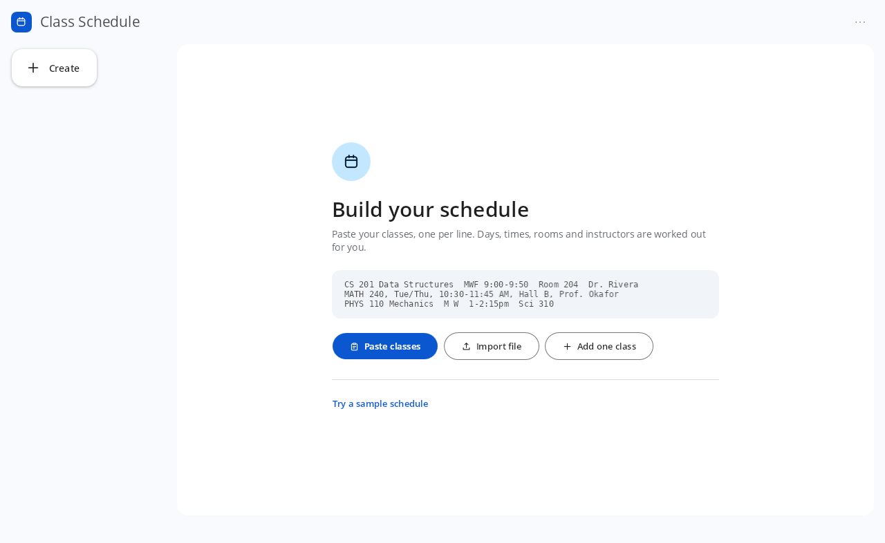
- Reminders
- A Windows notification before each class, and before assignments and exams are due. You choose how early.
- Assignments and exams
- “Coming up” lists what's due in the next two weeks. Overdue items turn red; tick them off when they're done.
- A different time each day
- A class can meet at 9:00 on Monday and 10:30 on Thursday, set in the same dialog.
- Import and export
- Bring classes in from .csv or .ics. Export .ics for Google Calendar, Outlook or Apple Calendar.
- Automatic backups
- If you want them, a dated copy of your schedule each time the app starts, next to the original.
- Remembers its place
- Window size and position, and the widget's spot on the desktop.
Your schedule is a file, and it's yours.
By default it sits in your Windows profile. Use Save schedule as… to keep it somewhere else, like a USB drive or a folder you already sync, and Open schedule file… to switch between terms.
There is no sign-in, no cloud sync, no analytics, no ads and no subscription. If you stop using the app, the file is still there and still readable.
%APPDATA%\ClassSchedule\ ├── schedule.json # classes, tasks, settings ├── schedule.backup-20261020-091512.json # if backups are on └── config.json # where your schedule lives
Download
Version 1.0.0 for Windows 10 (1809 or later) and Windows 11, 64-bit. Free, with no account.
a5d19d056861e6fead2da718c9d04ec019172ade5355df8fced760e108edfea13807603f483cc11456b4377010ff46e459690618c181c09d0b255b706b72e125Get-FileHash .\ClassSchedule.exe in PowerShell.Build it yourself
With the .NET 8 SDK, in PowerShell:
> git clone https://github.com/Earth1283/class-sched
> cd class-sched
> dotnet test tests/ClassSchedule.Core.Tests
> dotnet publish src/ClassSchedule/ClassSchedule.csproj `
-c Release -r win-x64 --self-contained `
-p:PublishSingleFile=true